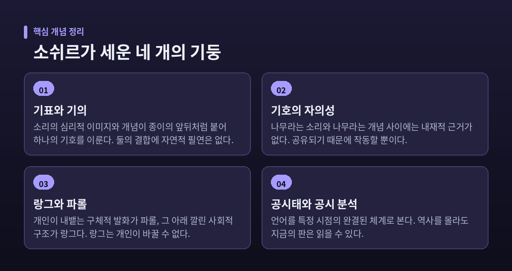
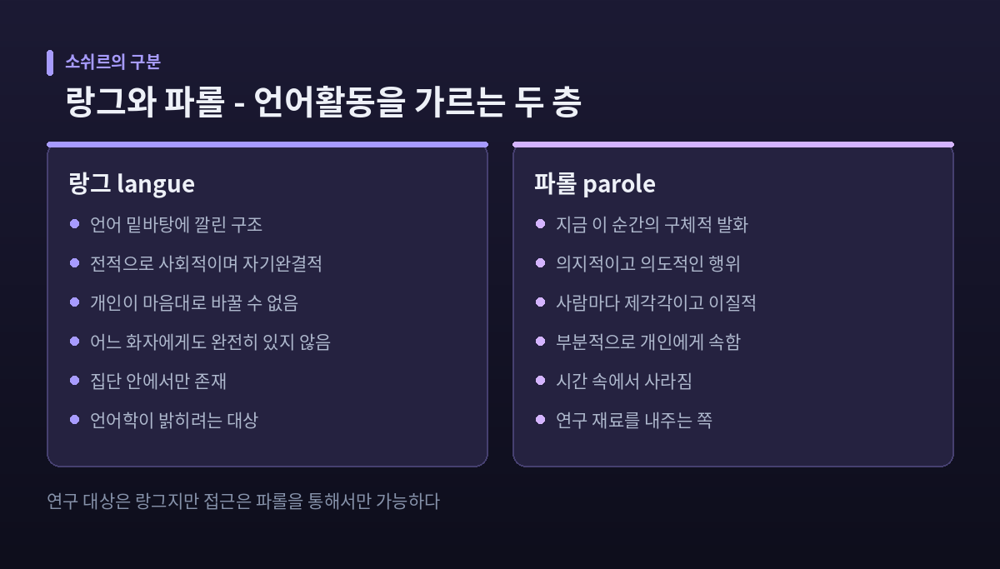
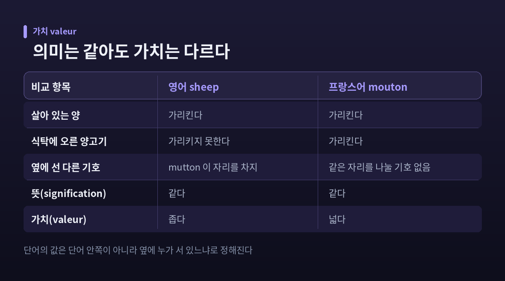
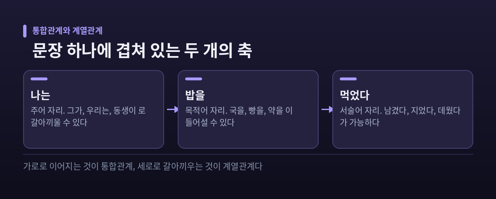
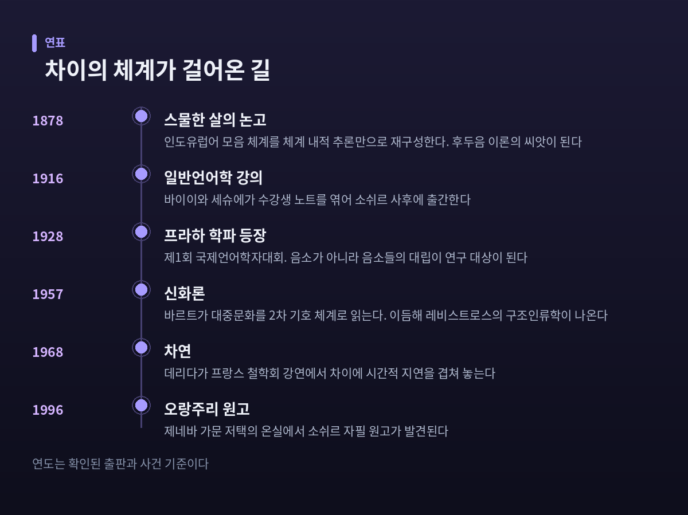

소쉬르 구조언어학 — 언어는 사물의 이름이 아니라 차이의 체계다
이번 글에서는 페르디낭 드 소쉬르의 구조언어학과 기호학을 정리해 보겠습니다. 언어를 사물에 붙인 이름표로 보던 오래된 상식이 어떻게 무너졌는지, 그 자리에 들어선 '차이의 체계'라는 발상이 무엇을 바꿨는지를 따라가려 합니다. 언어학을 넘어 인류학과 문학, 정신분석까지 번져간 경로와, 그 발상이 받은 비판도 함께 다루겠습니다.
언어는 이름표의 목록이 아닙니다
소쉬르의 출발점은 부정입니다. 그는 언어가 사물 목록에 붙이는 이름 목록이 아니라고 못 박았습니다. 아담이 동물들에게 차례로 이름을 붙였다는 식의 그림을 정면으로 거부한 것입니다.
이 부정에는 실용적인 이유가 있었습니다. 언어가 명명법이라면 언어학은 그저 유행하는 어휘론에 그칩니다. 단어 정의를 모은 목록을 만드는 일 이상이 되지 못합니다.
반박의 증거로 그는 번역의 어긋남을 들었습니다. 단어가 미리 존재하는 보편 개념을 가리킨다면 언어들 사이에 정확한 등가물이 있어야 합니다. 그런데 영어는 살아 있는 소를 ox, 식탁에 오른 고기를 beef로 나눠 부릅니다. 프랑스어는 bœuf 하나로 둘 다 가리킵니다. 개념이 먼저 있고 이름이 나중에 붙은 것이 아니라, 사회의 필요가 단어를 낳았다는 뜻입니다.
우리말도 사정이 다르지 않습니다. 한국어의 '밥'은 조리된 쌀이면서 끼니 전체를 가리킵니다. 영어에는 그 두 겹을 한 번에 받아내는 단어가 없습니다. 같은 세계를 두고 언어마다 다른 그림을 그리는 셈입니다.

기표와 기의 — 종이의 앞뒤
소쉬르는 기호(signe)를 이중 실체로 규정했습니다. 한쪽이 기표(signifiant), 다른 쪽이 기의(signifié)입니다.
기표는 청각영상입니다. 공기 중의 음파가 아니라 머릿속에 떠오르는 소리의 이미지입니다. 기의는 개념입니다. 저 바깥의 나무가 아니라 나무라는 관념입니다. 둘 다 심리적인 것이라는 점이 중요합니다.
둘은 떼어낼 수 없습니다. 종이의 앞면과 뒷면 같아서 한쪽만 따로 존재하지 못합니다.
그리고 이 둘의 결합에는 필연이 없습니다. 소쉬르는 이를 기호의 자의성이라 불렀습니다. '나무'라는 소리와 나무라는 개념 사이에 내재적이거나 자연적인 근거는 없습니다. 그 연결이 작동하는 이유는 하나뿐입니다. 공유되기 때문입니다.
의성어를 반례로 드는 사람이 있습니다. 소쉬르도 이를 예상했습니다. 다만 어원을 파고들면 의성어도 비의성어적 기원에서 갈라져 나온 경우가 많고, 무엇보다 언어마다 다릅니다. 개 짖는 소리를 프랑스어는 ouaoua로, 영어는 Bow Wow로 적습니다. 아플 때 내는 소리도 프랑스어는 aie, 영어는 ouch입니다. 자연이 정해준 소리라면 이렇게 갈라질 리 없습니다.
자의성이 무제한인 것은 아닙니다. 소쉬르는 상대적 유연성이라는 단서를 달았습니다. twenty와 two는 자의적이지만, twenty-two는 그 둘에 의해 제약됩니다. kicked의 의미도 kick과 ed에 의해 상대적으로 정해집니다. 체계 안쪽으로 들어갈수록 자의성은 줄어듭니다. 블룸필드가 어휘부를 "그 언어의 근본적 불규칙들의 집합"이라 부른 까닭입니다.
랑그와 파롤 — 개인이 바꿀 수 없는 것
소쉬르는 언어활동 전체에서 랑그(langue)와 파롤(parole)을 갈라냈습니다.
파롤은 우리가 일상에서 겪는 언어입니다. 지금 이 순간 누군가 내뱉는 구체적인 말, 쓰는 문장입니다. 의지적이고 의도적이며, 그래서 제각각입니다.
랑그는 그 아래 깔린 구조입니다. 전적으로 사회적이고 자기완결적이며, 개인이 마음대로 바꿀 수 없습니다. 어느 화자에게도 완전한 형태로 들어 있지 않습니다. 개인은 그것을 수동적으로 습득할 뿐이고, 랑그는 오직 집단 안에서만 존재합니다.
소쉬르는 말이 오가는 장면을 '언어 회로'라 불렀습니다. 최소 두 사람이 필요하고, 뇌와 음성이라는 두 물리적 요소가 관여합니다. 랑그는 그 회로에서 사회적·역사적으로 발생하는 비물리적 현상입니다. 다만 그는 랑그를 추상이 아니라 구체적인 것으로 보았습니다. 그래야 언어학의 대상이 되니까요.
여기에 역설이 하나 있습니다. 연구 대상은 랑그인데, 접근은 파롤을 통해서만 가능합니다. 재료를 내주는 쪽이 파롤이기 때문입니다.
덧붙일 점도 있습니다. 문화사가 에그버트 클라우케는 이 구분이 소쉬르의 스승 하이만 슈타인탈에게서 온 것이라고 봅니다. 완전한 독창이라고 단정하기는 어렵습니다.

공시태와 통시태 — 체스판 앞에 앉은 관객
19세기 언어학은 압도적으로 역사적이었습니다. 어떤 말이 어디서 갈라져 나왔는지를 캐는 일이 학문의 중심이었습니다.
소쉬르는 축을 하나 더 세웠습니다. 언어를 특정 시점의 완결된 체계로 보는 공시적 관점입니다. 그는 이를 AB축이라 부르고, 역사적 전개를 보는 통시적 관점을 CD축이라 불렀습니다.
예전에는 CD축만 학문이었습니다. 지금은 AB축이 언어학의 기본기가 되었습니다.
그가 든 비유가 체스입니다. 체스는 규칙의 변천사로도, 지금 판 위의 규칙으로도 연구할 수 있습니다. 그런데 이미 진행 중인 대국에 관객으로 합류한 사람을 떠올려 보시면 좋겠습니다. 그 사람에게 필요한 정보는 현재 말들의 배치와 다음 차례가 누구인지, 그것뿐입니다. 말들이 어떤 경로로 그 자리에 왔는지는 판을 읽는 데 보탬이 되지 않습니다.
소쉬르가 공시태를 더 중시한 이유가 여기 있습니다. 그것이 실제 화자의 관점이기 때문입니다.
"언어에는 차이만이 있고 적극적 항은 없다"
소쉬르 사유의 심장부입니다. 그는 이렇게 썼습니다. 기의를 취하든 기표를 취하든, 언어에는 체계 이전에 존재하던 관념도 소리도 없고 오직 체계에서 발생한 개념적·음성적 차이만 있다고 말입니다.
기호는 바깥 현실과 대응해서 가치를 얻지 않습니다. 체계 안의 다른 기호들과 달라짐으로써 얻습니다. tree가 의미를 갖는 이유는 나무의 본질과 닿아 있어서가 아니라, 그것이 free도 three도 rock도 아니기 때문입니다.
여기서 의미(signification)와 가치(valeur)가 갈립니다. 영어 sheep과 프랑스어 mouton은 뜻이 같습니다. 그러나 가치가 다릅니다. mouton은 식탁에 오른 양고기까지 가리키지만 sheep은 그럴 수 없습니다. 영어에는 mutton이라는 기호가 이미 그 영역을 갈라 갖고 있기 때문입니다.
한 단어의 뜻은 단어 안쪽이 아니라 옆에 누가 서 있느냐로 정해집니다.
프랑스어의 두려움 계열도 같습니다. redouter, craindre, avoir peur는 서로 대립해 존재하는 한에서만 각자의 자리를 지킵니다. 만약 둘이 사라지면 남은 하나가 그 역할까지 떠맡아 더 뭉툭해집니다. 자기를 구별해낼 상대를 잃었기 때문입니다.

통합관계와 계열관계 — 가로축과 세로축
소쉬르는 언어의 관계가 두 종류뿐이라고 단언했습니다.
하나는 통합관계입니다. 문장 속 단어들처럼 앞뒤로 이어지는 연쇄입니다. 가로축이라 생각하시면 됩니다.
다른 하나는 계열관계입니다. 같은 자리에 서로 대체될 수 있는 항목들의 관계입니다. 세로축입니다. 소쉬르 본인은 이를 연합관계라 불렀고, 지금 쓰이는 '계열관계'라는 용어는 야콥슨에게서 왔습니다.
한국어로 보면 분명해집니다. "나는 밥을 먹었다"에서 '밥을'은 앞뒤의 '나는', '먹었다'와 통합관계를 맺습니다. 동시에 그 자리에는 '국을', '빵을', '약을'이 들어설 수 있습니다. 이들이 '밥을'과 맺는 것이 계열관계입니다.
집합에는 늘 유사성이 있지만, 전제 조건은 차이입니다. 차이가 없으면 항목을 구별할 수 없고, 그러면 항목이 하나뿐이라 집합 자체가 성립하지 않습니다.
이 두 축이 음운론과 형태론, 통사론과 의미론으로 가는 문을 열었습니다. cat과 cats가 머릿속에서 묶여 복수형 규칙을 드러내고, 프랑스어 je dois와 dois je?가 어순만으로 평서문과 의문문을 가르는 것을 보여주는 식입니다.

음소는 소리가 아니라 자리입니다
차이의 논리가 가장 선명하게 열매를 맺은 곳이 음운론입니다.
프라하 언어학파는 1928년 제1회 국제언어학자대회에서 모습을 드러냈습니다. 트루베츠코이와 야콥슨은 소쉬르가 강조한 '차이적 기능'을 이어받아, 음소 자체보다 음소들 사이의 대립을 중시했습니다. 트루베츠코이의 『음운론 원리』가 그 이론적 종합이었고, 그가 1938년 세상을 떠난 뒤 이 책은 후속 연구의 출발점이 되었습니다. 야콥슨은 여기서 변별자질과 이항 대립, 유표성 개념을 끌어냈습니다.
한국어를 보시면 이 발상이 무엇인지 단번에 와닿습니다. 불, 뿔, 풀. 세 단어를 가르는 것은 유성음이냐 무성음이냐가 아닙니다. 한국어에는 음소적 유성성이 아예 없습니다. 평음과 경음과 격음, 즉 기식과 긴장의 차이가 셋을 나눕니다.
영어 화자에게 이 셋은 잘 구별되지 않습니다. 물리적으로 존재하는 소리인데도 그렇습니다. 소리가 없어서가 아니라, 그 언어의 체계 안에 그 대립이 놓일 자리가 없기 때문입니다.
음소는 소리 그 자체가 아니라 체계 안의 자리입니다.
언어학 밖으로 번져간 방법
소쉬르가 언어에 쓴 도구를 후대 사람들이 다른 의미 체계에 가져다 썼습니다.
클로드 레비스트로스는 이를 문화인류학에 적용했습니다. 1940년대에 그는 인류학이 봐야 할 것은 문화적 범주를 만들어내는 인간 사고의 기저 패턴이라고 제안했습니다. 문화도 언어처럼 숨은 규칙의 체계라는 것입니다. 그 규칙을 찾는 방법이 이항 대립의 식별이었습니다. 자연과 문화, 날것과 익힌 것 같은 대비입니다. 그는 친족과 혼인 연구에서 출발해 신화로 나아갔고, 1958년 『구조인류학』을 내놓았습니다.
롤랑 바르트는 이를 문학과 대중문화로 가져갔습니다. 1957년의 『신화론』은 1954년부터 1956년 사이에 쓴 쉰세 편의 짧은 글 모음입니다. 비누 광고나 로마의 이미지 같은 일상의 산물을 이데올로기 비판의 대상으로 삼았습니다. 그의 장치는 간명합니다. 신화는 2차 기호 체계라는 것입니다. 1차 체계에서 완성된 기호를 통째로 새로운 기표로 삼아, 더 넓은 문화적 의미를 실어 나릅니다.
자크 라캉은 프로이트와 소쉬르를 겹쳐 읽으며 정신분석을 구조주의의 빛 아래 다시 세웠습니다.

데리다의 차연 — 체계 안에 남은 균열
1970년대 프랑스에서 후기구조주의가 태어났습니다. 구조주의의 입장을 급진화하는 동시에 문제 삼는 방식이었습니다.
자크 데리다는 1968년 1월 프랑스 철학회 강연에서 '차연(différance)'이라는 말을 내놓았습니다. 같은 해 여름에 글로 출간됩니다. 그는 이것이 개념도 단어도 아니며 이중의 전략적 주제라고 선언했습니다.
철자가 핵심입니다. différence가 아니라 a를 넣은 différance입니다. 프랑스어 différer의 두 뜻을 한꺼번에 담기 위해서입니다. 다르다는 뜻과 연기한다는 뜻입니다.
데리다의 수는 반박이 아니라 연장이었습니다. 가치가 차이적이라는 소쉬르의 통찰을 받아들이되, 그 차이가 시간적 지연과 분리될 수 없다고 밀어붙인 것입니다. 한 기호의 의미를 확정하려면 다른 기호를 참조해야 하고, 그 기호는 또 다른 기호를 부릅니다. 확정은 계속 미뤄집니다.
그래서 흔적(trace)이라는 말이 나옵니다. 모든 단어는 자기가 구별되어 나온 다른 단어들의 자취와, 이전에 놓였던 맥락의 자취를 묻히고 다닙니다. 의미가 만들어지는 과정 자체가 순수하게 현전하는 자기동일적 의미를 구조적으로 불가능하게 만듭니다.
비판의 날은 또 있습니다. 데리다는 소쉬르의 틀이 여전히 말을 글 위에 두고, 글을 말의 단순한 전사로 취급한다고 보았습니다. 안정된 중심과 궁극의 닻이 있다는 믿음, 이것을 그는 로고스중심주의라 불렀습니다.
그 책은 소쉬르가 쓰지 않았습니다
여기서 문헌학의 문제를 짚어야 합니다.
『일반언어학 강의』는 소쉬르가 집필한 책이 아닙니다. 그는 1900년대 후반 제네바 대학에서 일반언어학을 세 차례 강의했고, 1913년 쉰다섯의 나이로 세상을 떠났습니다. 동료이자 제자인 샤를 바이이와 알베르 세슈에가 수강생들의 노트를 모아 편집해 1916년에 책을 냈습니다.
문제는 두 사람이 정작 그 강의를 듣지 않았다는 사실입니다.
제기된 비판은 구체적입니다. 편집자들이 자기 생각에 따라 장의 구조와 순서를 짰고, 소쉬르의 중요한 정식과 설명을 빠뜨렸으며, 자신들의 논평과 이론적 아이디어를 보탰다는 것입니다. 여러 면에서 원래 가르침과 갈라지는 텍스트가 만들어졌다는 지적입니다.
학계가 이를 인식한 것은 1950년대 말입니다. 로베르 고델이 제네바 공공도서관의 소쉬르 유고를 정리하고 분류한 뒤였습니다. 루돌프 엥글러는 1967년과 1974년에 비판본을 내어 원자료와 대조할 길을 열었습니다. 오늘날 『강의』의 여러 세부를 소쉬르 본인에게 추적하기 어렵다는 점은 분명해졌습니다.
그리고 1996년, 제네바에 있는 소쉬르 가문 저택의 오랑주리에서 자필 원고가 발견됩니다. 그중에는 『언어의 이중 본질에 관하여』라는 표제가 붙은 묶음이 있었습니다. 이 자료들은 2002년 시몽 부케와 엥글러의 편집으로 프랑스어판 『일반언어학 노트』로, 2006년에는 영역본으로 나왔습니다.
발견의 무게를 두고는 평가가 갈립니다. 한쪽은 잃어버린 원본이 돌아왔다고 봅니다. 다른 쪽은 신중합니다. 그 내용의 상당 부분이 이미 엥글러의 비판본과 1995년에 출간된 다른 초고를 통해 연구자들에게 알려져 있었다는 것입니다. 어느 쪽이 옳은지는 아직 정리되지 않았습니다.
남는 것과 남지 않는 것
소쉬르의 구조언어학이 모든 것을 해결하지는 않았습니다.
체계를 강조한 대가로 역사와 변화의 설명이 얇아졌다는 지적이 있습니다. 사회적 맥락과 권력의 문제를 다루기 어렵다는 비판도 오래되었습니다. 데리다의 차연은 차이의 체계라는 발상 자체를 그 논리로 되밀어 균열을 냈습니다.
그럼에도 한 가지는 남았습니다. 단어가 사물에 붙인 이름표가 아니라는 인식입니다.
정리하면 이렇습니다. 소쉬르가 바꾼 것은 언어에 관한 특정 이론이 아니라, 무언가를 이해하는 방식 자체였습니다. 개별 요소의 속성을 들여다보는 대신 요소들 사이의 관계망을 보는 시선. 그 시선이 언어학을 떠나 인류학과 문학과 정신분석으로 번졌고, 그것을 무너뜨리려던 후기구조주의조차 그 시선을 물려받았습니다.
언어가 세계를 반영하는 거울이냐고 물으신다면, 소쉬르를 읽은 뒤에는 다르게 답하게 됩니다. 거울이 아니라 격자라고 말입니다. 우리는 세계를 있는 그대로 보는 것이 아니라, 우리가 가진 기호들이 갈라놓은 칸을 통해 봅니다.